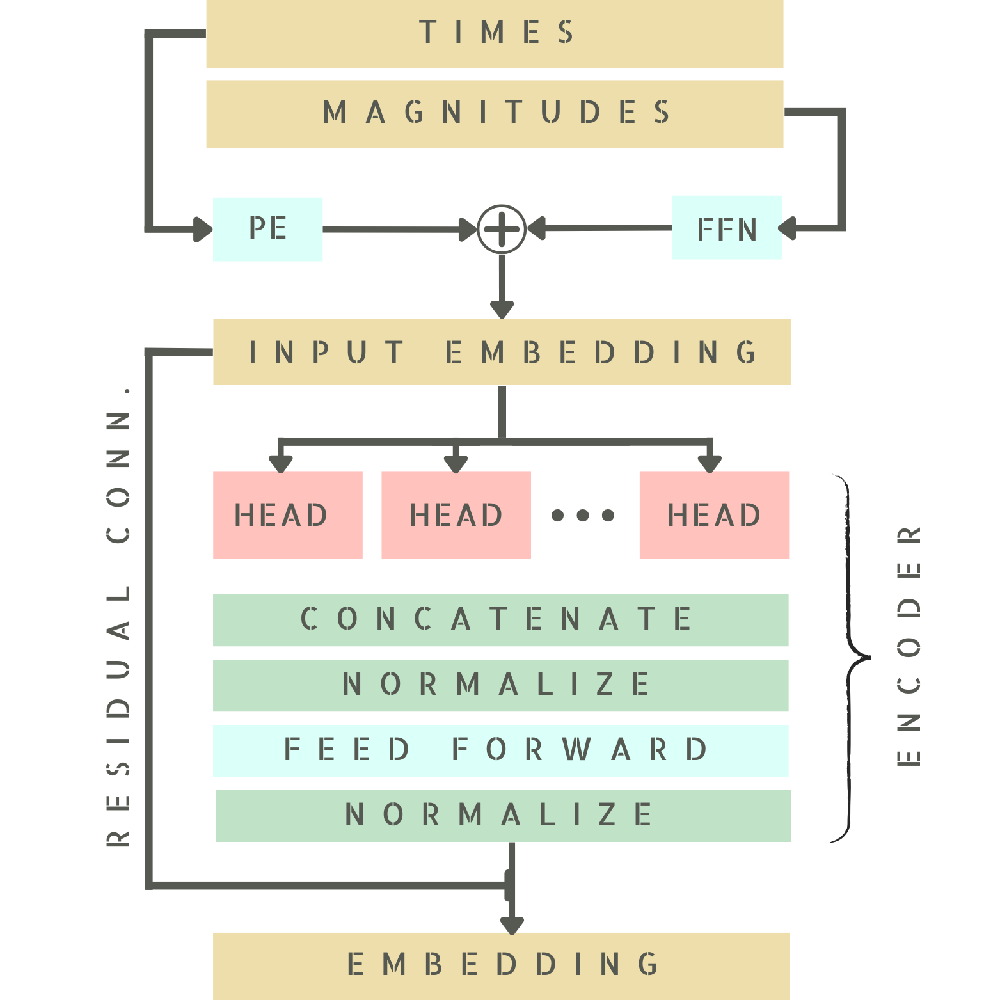

Transformer-Based Astronomical Time Series Model with Uncertainty Estimation for Detecting Misclassified Instances
Martina Cádiz-Leyton, Guillermo Cabrera-Vives, Pavlos Protopapas, Daniel Moreno-Cartagena, and Cristobal Donoso-Oliva
 Harvard SEAS
Harvard SEAS
Explore the original model architecture, pretrained weights, and papers.
ASTROMER uses an encoder-decoder design based on the Transformer architecture proposed by Vaswani and colleagues in 2017. It combines positional encodings of observation times with learned representations of measured magnitudes. The encoder uses attention to turn this input into an embedding.

Both versions were trained on data from the MACHO survey.
| Version | Description | Test RMSE | Test R² |
|---|---|---|---|
| Download v0 | Model described in the original paper | 0.147 | 0.80 |
| Download v1 | Model with an added mask token and residual connections | 0.113 | 0.72 |
To share weights from a model you trained from scratch, submit a pull request to the weights repository.
Martina Cádiz-Leyton, Guillermo Cabrera-Vives, Pavlos Protopapas, Daniel Moreno-Cartagena, and Cristobal Donoso-Oliva
Daniel Moreno-Cartagena, Guillermo Cabrera-Vives, Pavlos Protopapas, Cristobal Donoso-Oliva, Manuel Pérez-Carrasco, and Martina Cádiz-Leyton
C. Donoso-Oliva, I. Becker, P. Protopapas, G. Cabrera-Vives, Vishnu M., and Harsh Vardhan